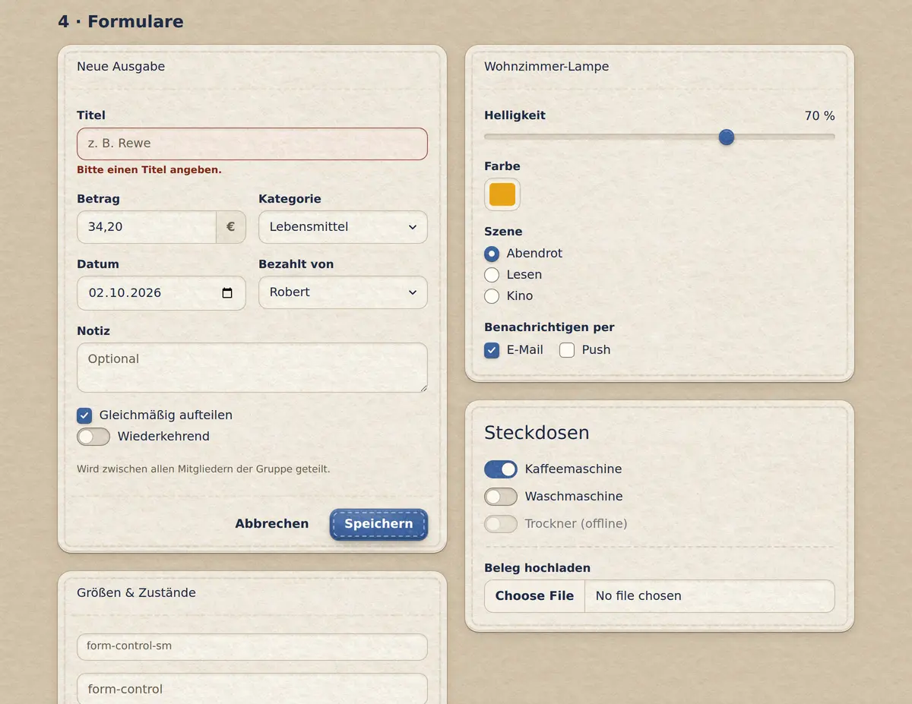
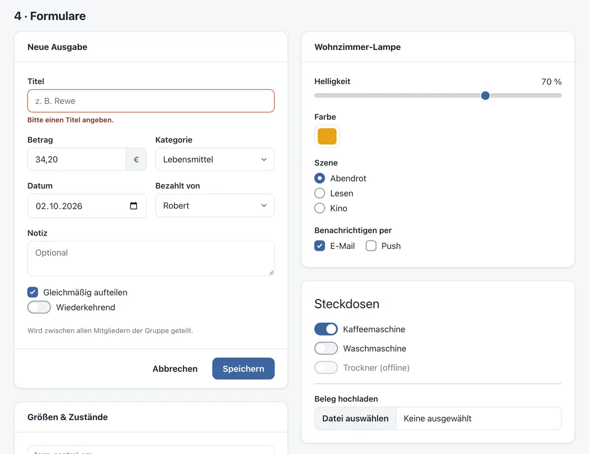

Getting started
Felt and clean
felt-css comes in two looks. One attribute on the html element switches between them, and nothing on the page moves when you do.
View page source on GitHubOn this page
Switching looks#
Without any attribute you get the clean look: flat surfaces, hairline borders, Bootstrap-like. Add data-look="felt" to the <html> element and the same page is cut from wool felt and sewn together.
<html lang="en" data-look="felt">Try it with the Felt / Clean switch at the top of this page: every example in these docs follows it.


The look is a page-wide setting: the felt tokens hang off :root[data-look="felt"], so put the attribute on <html>, not on a single section.
Remembering the choice#
felt-css doesn't store anything itself. If you offer a switch, set the attribute before the first paint so the page doesn't flash, for example with a tiny inline script in the <head> — this is what these docs do:
<script>
(() => {
let look = null
try { look = localStorage.getItem('look') } catch {}
document.documentElement.dataset.look = look === 'clean' ? 'clean' : 'felt'
})()
</script>How the felt works#
Two felt recipes#
Saturated pieces (buttons, stat tiles, badges, the active pagination item) are patches: grey felt blended soft-light onto the colour, a soft cut edge and a cast shadow. Light surfaces (page, cards, alerts, list groups) are quiet felt: cream felt blended multiply, flat, at the same fibre scale. Both textures are SVG noise, a fine and dense craft felt. In dark mode the sheet is charcoal felt.
Thread#
Seams are drawn 9-slice SVGs, taut stitches in a pressed groove, laid on with border-image; pills and square pieces get a seam that follows their edge. They're tinted with mix-blend-mode: hard-light, so the thread is always a tone of the felt underneath: lighter on colour, a shade darker on cream. Dividers inside a piece (card headers, table rows, .vr, <hr>) are single rows of stitches. Border utilities are thread too: .border-{colour} dyes a piece's seam, and a bordered element without one gets a seam of its own (Firefox keeps the plain line).
Never moves#
The felt layer only changes colours, textures, shadows and seams — never padding, borders or fonts. Toggling the look doesn't shift a single pixel, so you can design in clean and switch to felt at the end, or let your users choose.
Opt-out friendly#
All felt rules sit in @layer felt behind :where([data-look="felt"]), so they have zero specificity and your own CSS always wins. To keep one element flat, just style it.
Weight#
felt.css is about 38 KB gzipped. The felt textures and seams in img/ add about 9 KB and are only downloaded when the felt look is on.
Rebuilding the assets#
tools/build_assets.py draws the textures and seam frames in img/ and writes the matching sizes into felt.css. Want longer stitches or rounder corners? Change LEN, PERIOD or SHAPES at the top of the script and run it again. After changing a texture recipe (FELT), tools/calibrate_felt.py prints the bases that keep its brightness.
python3 tools/build_assets.py # plain python3
python3 tools/calibrate_felt.py # needs Node with Playwright and ImageMagicktools/combos.html shows every surface with every button, badge, border colour and seam radius, to check a change in both themes (?theme=dark).